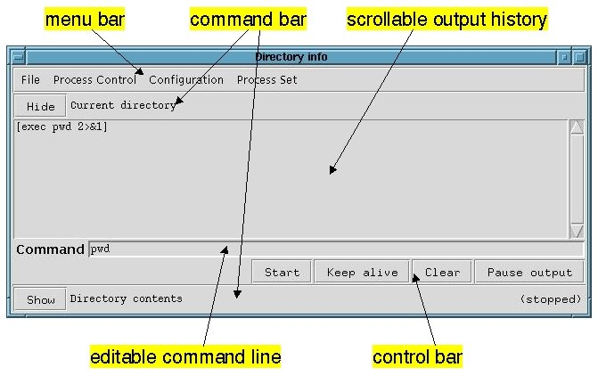

Galaxy Communicator Tutorial:
How to Use the Process Monitor
The process monitor is a tool which allows the user to control and monitor
system processes in a variety of configurations. This tools is used extensively
in the tutorial and in the examples in the Galaxy Communicator distribution.
In this lesson, we learn about the various parts of the process monitor
and how to use them.
Once you feel comfortable with the process monitor, if you want to know
more, you can consult the process monitor
reference.
Starting the process monitor
There are a couple different ways to start the process monitor, but we'll
be starting it with a file which describes the configuration of processes
that it will run. The process monitor executable can be found at $GC_HOME/contrib/MITRE/tools/bin/process_monitor.
Let's start it up to run a couple of simple Unix applications.
[Process monitor exercise 1]
Unix:
% process_monitor $GC_HOME/tutorial/process_monitor/dir.config 1
&
Windows:
C:\> python %PM_DIR%\process_monitor.py %GC_HOME%\tutorial\process_monitor\dir.config
3
(If the shell can't find the process monitor application, make sure you've
configured
your environment correctly.) You'll get a window which looks like this
(on Unix; it will look a little different on Windows)::

The menu bar
The process monitor contains a menu bar, which controls the overall configuration
of the process monitor and the collection of processes.
The File menu
The File menu contains the Quit command, which shuts down all the processes
and exits the process monitor.
The Process Control menu
The Process Control menu contains three commands:
- Stop all, which stops all the processes
- Clear all, which resets all the scrollable output histories
- Restart all, which stops all the processes which are running and
then starts all the processes
The Configuration menu
The Configuration menu allows you to choose between two different configurations:
- Column configuration, which displays all the processes in one, two
or three columns
- Compressed configuration, which displays only a single process at
a time, which you can switch between with a set of radio buttons; you can
select one, two or three rows of buttons
The Process Set menu
If the configuration file you're using has more than one set of processes
it can run, the Process Set menu will switch between different sets of processes.
When you switch between process sets, the current process set (if there is
one) will be shut down.
The process panes
The process monitor presents each process as four panes:
- A command bar, which includes the Hide/Show button as well as the
title of the process
- A scrollable output history, which contains the command to be executed,
in square brackets, and the output of the command (both standard output
and standard error)
- An editable command line
- A control bar, which contains the Start/Stop button, the Keep alive/Let
die button, the Clear button and the Pause output/Resume output button
Whether or not all these panes are visible depends on the Hide/Show button.
In the example here, there are two processes, one which has all four panes
visible, and one which has only the command bar.
Hide/Show
Press the button marked "Hide" on the command bar titled "Current directory".
See how the lower three panes for the process vanish. Like the command bar
titled "Directory contents", the run status now appears on the command bar
on the far right, and this button now reads "Show". Press it again to restore
the configuration.
Start/Stop
Press the button marked "Start". The process monitor will now run a command
which prints the current working directory, and you'll see something like
the following output in the scrollable output history:
[Scrollable output pane]
Unix:
[exec pwd 2>&1]
/usr/GalaxyCommunicator-3.2
======================================
Windows:
[cmd.exe /c chdir]
C:\
======================================
Note the row of equals signs ("="). This indicates that the process has
halted. You may also have noticed that for the instant the process is running,
this button reads "Stop". While the button reads "Stop", you can press it
to stop the process.
Keep alive/Let die
Press the button marked "Keep alive". The process will now be automatically
restarted if it dies of its own accord. The button now reads "Let die".
Press "Start" and notice how the command is called over and over. Press
"Stop" to halt this sequence, and "Let die" to disable automatic restart.
Clear
Press the button marked "Clear". The scrollable output history is cleared
and the command to be executed is rewritten to the output pane.
Pause output/Resume output
This final toggle button pauses and resumes the output. Press "Keep alive"
again, and then "Start". As the process is running over and over, press
"Pause output", and note that nothing is now being added to the scrollable
output pane. The button now reads "Resume output". Press "Resume output",
then "Stop", then "Let die".
Using the menu bar
Press "Show" on the command bar titled "Directory contents". Select "Process
Control -> Restart all". Both processes run and terminate. Select "Process
Control -> Clear all" to clear all the scrollable output panes.
Next, we'll switch configurations. Select "Configuration -> Compressed
configuration -> One button row". Now the process monitor displays a
single output history, command line and control bar, with a row of buttons
directly below the menu bar to select the displayed process. Try switching
between the two processes, and start, stop and clear the processes to convince
yourself that the process displayed in the pane corresponds to the selected
process in the button row.
The "Detach this pane" button at the bottom allows you to view a given
process in its own window with its own set of panes. Press this button.
The button corresponding to the current process disappears from the button
row, and the new window which appears has a no menu bar and a button at
the bottom which says "Reattach this pane". When the separate window is
reattached, the corresponding button is re-added to the button row on the
main window.
Finally, let's switch process sets. Select "Process Set -> Environment
settings". Now the process monitor displays a single process, different from
the others. Start this process. Now use the "Process Set" menu to switch between
the two process sets. Notice that each process set is in the state you left
it in.
Once you're done exploring the process monitor, select "File -> Quit"
to exit.
Next: A sample end-to-end
system: MITRE's toy travel demo
Last updated August 6, 2002